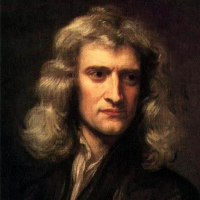

Daftar Isi
- Beranda
- Pythagoras
- Euclid
- Archimdes
- Leonardo Fibonacci
- Isaac Newton
- Leonhard Euler
- Carl Friedrich Gauss
- Georg Cantor
- Alan Turing
Hubungi Admin


JAM
lainnya
10 tokoh berpengaruh dalam matematika
Siapa itu Newton?

Sejarah Hidup:
Isaac Newton (1643–1727) adalah seorang fisikawan, matematikawan, astronom, dan filsuf Inggris yang dianggap sebagai salah satu tokoh paling berpengaruh dalam sejarah ilmu pengetahuan. Ia lahir di Woolsthorpe, Inggris, dan dikenal karena karyanya yang meliputi bidang fisika, matematika, dan astronomi.
Pemikiran:
Salah satu pemikiran paling revolusioner dari Newton adalah pengembangan hukum gerak dan hukum gravitasi. Dalam karyanya "Philosophiæ Naturalis Principia Mathematica" (Prinsip-Prinsip Matematika dalam Filsafat Alam), yang diterbitkan pada tahun 1687, Newton mengemukakan tiga hukum gerak (hukum Newton) yang membentuk dasar mekanika klasik. Ia juga merumuskan Hukum Gravitasi Universal, yang menjelaskan bagaimana benda-benda saling menarik satu sama lain melalui gaya gravitasi.
Karya:
Salah satu karya paling terkenal Newton adalah "Philosophiæ Naturalis Principia Mathematica," di mana ia merumuskan hukum-hukum gerak dan hukum gravitasi. Karya ini mengubah cara pandang kita terhadap alam semesta dan membuka jalan bagi pengembangan ilmu fisika modern.
Selain itu, Newton juga berkontribusi dalam matematika dengan mengembangkan kalkulus secara independen bersama dengan Gottfried Wilhelm Leibniz. Meskipun ada perdebatan tentang siapa yang pertama kali mengembangkan kalkulus, kontribusi Newton dan Leibniz memberikan dasar bagi cabang matematika yang penting ini.
Pengaruh dalam Matematika:
Kontribusi Newton dalam matematika sangat besar, terutama dalam pengembangan kalkulus. Kalkulus adalah alat matematika yang sangat penting dalam memahami perubahan dan analisis fungsi. Konsep integral dan diferensial yang dikembangkan oleh Newton telah menjadi dasar bagi berbagai aplikasi dalam ilmu pengetahuan, teknik, ekonomi, dan berbagai disiplin lainnya.
Pengembangan hukum-hukum gerak dan hukum gravitasi juga membantu mengembangkan mekanika klasik, yang menjadi dasar bagi pemahaman kita tentang pergerakan benda-benda di alam semesta. Kontribusi Newton mengantarkan manusia ke era ilmu pengetahuan modern dan membuka jalan bagi perkembangan berbagai bidang ilmu, termasuk fisika dan matematika.
Isaac Newton adalah salah satu tokoh paling berpengaruh dalam sejarah ilmu pengetahuan dan matematika, dan kontribusinya terus memengaruhi cara kita memahami alam semesta dan menerapkan konsep matematika dalam berbagai aspek kehidupan kita.